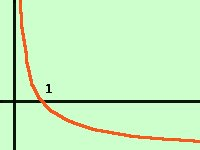

|
Risolvere la seguente disequazione logaritmica log1/3 (3-x) > log1/3(2x+6) Come prima cosa poniamo la condizione che gli argomenti dei logaritmi siano positivi 3 - x > 0 2x + 6 > 0 che equivalgono a x < 3 x > -3 Trasformiamola disequazione nella forma log1/3(espressione) > 0 Porto tutti i termini prima del maggiore log1/3 (3 - x) - log1/3(2x+6) > 0 e, per i teoremi sui logaritmi, posso scrivere 
-1 < x < 3 Mettendo assieme questa relazione con le condizioni per la realta' dei logaritmi ho il sistema x > -3 -1 < x < 3 Riporto i dati su un grafico, e prendo i valori comuni a tutte le disequazioni indico i valori accettabili con una linea continua Ottengo quindi -1 < x < 3 |